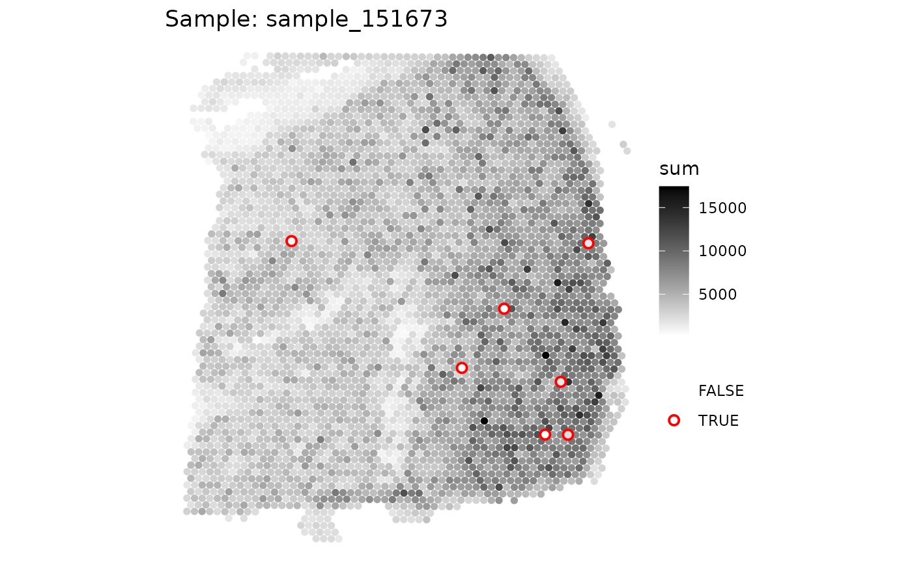

This function generates a plot for a specified sample within a SpatialExperiment object, highlighting outliers based on a specified metric. The plot visualizes the metric of interest and indicates outliers with a distinct color.
Arguments
- spe
A SpatialExperiment object containing the data to be plotted.
- sample_id
A character string specifying the column name in
colData(spe)that contains unique sample identifiers. Default is "sample_id".- sample
A character string or numeric value specifying the sample to be plotted. By default, it plots the first unique sample found in
spe$sample_id.- metric
A character string specifying the metric to be visualized in the plot. This metric should be a column name in
colData(spe).- outliers
A character string specifying the column name in
colData(spe)that indicates whether a data point is considered an outlier. Default is NULL.- point_size
A numeric value specifying the size of the points in the plot. Default is 2.
- colors
A character vector specifying the colors to be used for the gradient scale. If length is 2, the gradient will be a single color gradient.
- stroke
A numeric value specifying the border thickness for outlier points. Default is 1.
Value
The function returns a plot object created by make_escheR and
modified with additional layers for visualizing the specified metric and
outliers. The plot is not explicitly printed by the function and should be
printed by the caller.
Examples
library(SpotSweeper)
library(SpatialExperiment)
library(escheR)
# load example data
spe <- STexampleData::Visium_humanDLPFC()
#> see ?STexampleData and browseVignettes('STexampleData') for documentation
#> loading from cache
# change from gene id to gene names
rownames(spe) <- rowData(spe)$gene_name
# drop out-of-tissue spots
spe <- spe[, spe$in_tissue == 1]
spe <- spe[, !is.na(spe$ground_truth)]
# Identifying the mitochondrial transcripts in our SpatialExperiment.
is.mito <- rownames(spe)[grepl("^MT-", rownames(spe))]
# Calculating QC metrics for each spot using scuttle
spe <- scuttle::addPerCellQCMetrics(spe, subsets = list(Mito = is.mito))
colnames(colData(spe))
#> [1] "barcode_id" "sample_id" "in_tissue"
#> [4] "array_row" "array_col" "ground_truth"
#> [7] "reference" "cell_count" "sum"
#> [10] "detected" "subsets_Mito_sum" "subsets_Mito_detected"
#> [13] "subsets_Mito_percent" "total"
# Identifying local outliers using SpotSweeper
spe <- localOutliers(spe,
metric = "sum",
direction = "lower",
log = TRUE
)
plotQC(spe, metric="sum", outliers="sum_outliers")
